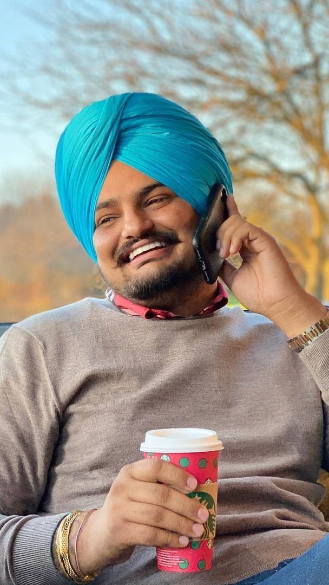
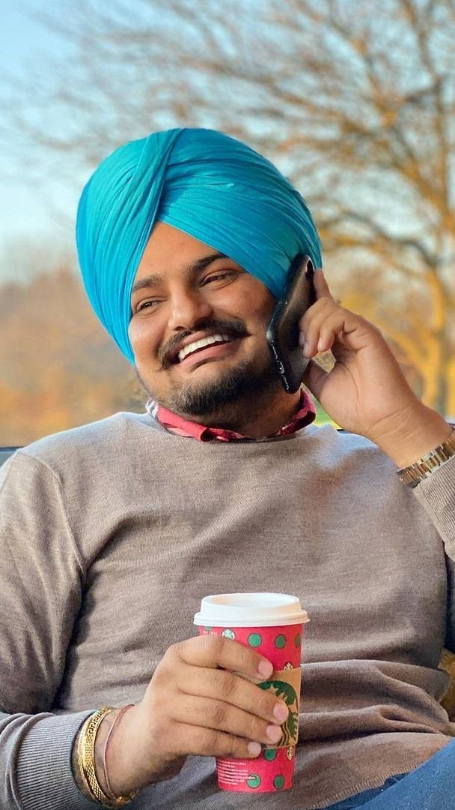

"One of the greatest Punjabi artists of his generation"
"One of the greatest Punjabi artists of his generation"
Shubhdeep Singh Sidhu (11 June 1993 – 29 May 2022), known professionally as Sidhu Moose Wala, was an Indian rapper, singer and songwriter. He worked predominantly in Punjabi-language music and cinema. He is generally regarded to have been one of the greatest Punjabi artists of his generation and to many, amongst the greatest Punjabi artists of all time. Moreover, he was considered a key figure in opening the door for Punjabi artists into mainstream music.